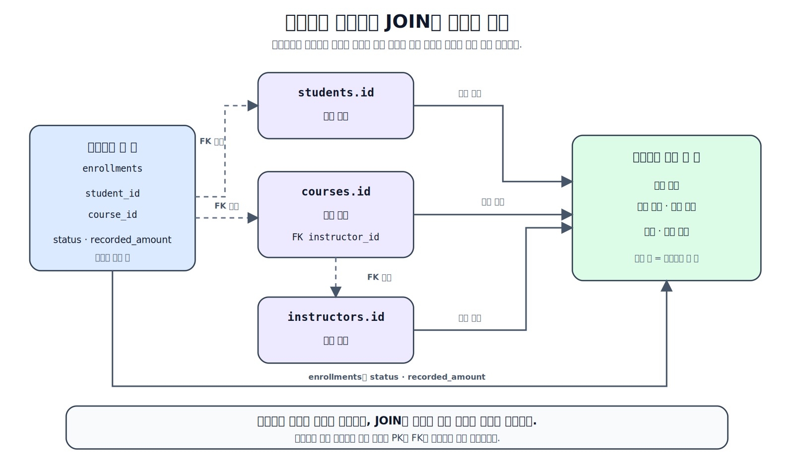
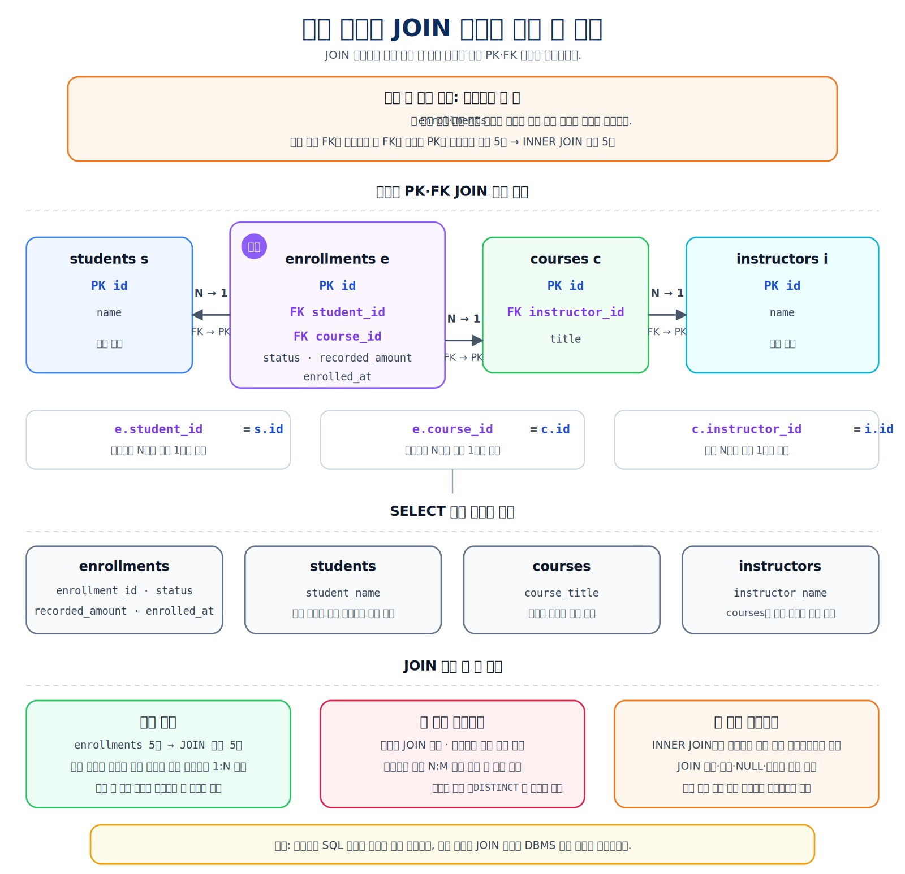
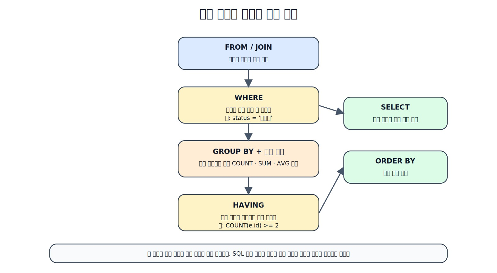
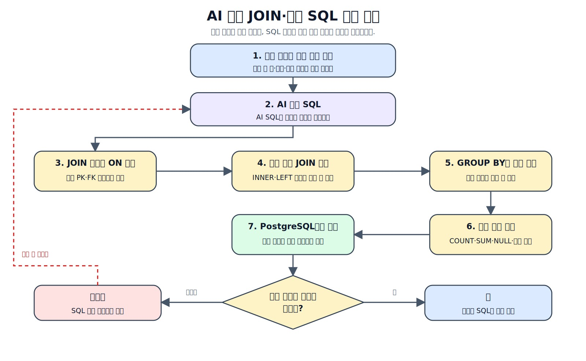

JOIN과 집계로 서비스 질문에 답하기
Chapter 07에서 완성한 온라인 강의 데이터를 바탕으로 관계에 따라 테이블을 연결하고, 결과 한 행의 기준과 상태 범위를 정한 뒤 집계와 검산으로 서비스 질문에 정확하게 답하는 방법을 익힙니다.
그리고 집계 결과가 실제 질문에 맞는지 무엇으로 검산할까?
이 장에서 살펴볼 내용
Chapter 07에서는 course_project 스키마에 온라인 강의 수강신청 데이터베이스를 완성했습니다. 이제 저장된 데이터를 관계에 따라 연결하고, 업무 질문에 맞게 요약합니다.
이 장의 흐름은 다음과 같습니다.
Chapter 07 기준 상태 확인
→ 업무 질문 정의
→ 결과 한 행의 기준 결정
→ PK·FK JOIN 경로 확인
→ INNER JOIN 또는 LEFT JOIN 선택
→ 행 수와 NULL 해석
→ 분석 상태 범위 결정
→ COUNT·SUM·AVG로 기본 검산
→ GROUP BY·HAVING으로 요약
→ 상세 결과와 집계 결과 대조
→ AI SQL의 누락·중복·과대 집계 검토
이 장에서는 다음 내용을 다룹니다.
INNER JOIN,LEFT JOIN과 다중 JOIN- 결과 한 행의 기준과 1:N 관계의 반복
- 외부 JOIN에서
ON과WHERE조건의 차이 LEFT JOIN ... IS NULL과NOT EXISTSCOUNT(*),COUNT(column),COUNT(DISTINCT column)SUM,AVG,MIN,MAXGROUP BY,HAVING,COALESCE- PostgreSQL의 조건부 집계
FILTER - 전체 신청, 활성 신청과 취소 제외 신청 이력의 구분
- 여러 1:N JOIN에서의 과대 집계
- 상세 데이터와 집계 결과의 검산
- AI가 만든 JOIN·집계 SQL 검토
이 장에서는 서비스 조회에서 자주 사용하는 INNER JOIN과 LEFT JOIN에 집중합니다. RIGHT JOIN, FULL OUTER JOIN, CROSS JOIN은 입문 프로젝트 범위에서 제외합니다. RIGHT JOIN의 많은 사례는 테이블 순서를 바꾸어 LEFT JOIN으로 표현할 수 있습니다.
핵심 원칙
JOIN과 집계 쿼리는 문법보다 먼저 “한 행이 무엇을 뜻하는지, 어떤 상태와 행을 포함할지, 무엇을 세거나 더할지”를 결정해야 합니다.
1. Chapter 07 최종 데이터를 그대로 사용한다
Chapter 08은 별도 테이블을 만들거나 Chapter 07 데이터를 삭제하지 않습니다. 다음 파일을 순서대로 실행한 최종 상태를 그대로 사용합니다.
code/chapter07/01_course_project_schema.sql
code/chapter07/02_course_project_seed.sql
code/chapter07/03_course_project_changes.sql
code/chapter07/04_course_project_validation.sql
프로젝트 객체는 다음과 같습니다.
course_project.students
course_project.instructors
course_project.courses
course_project.enrollments
실행 위치 확인
SELECT current_database();
SELECT current_schema();
SHOW search_path;
모든 객체를 course_project.students처럼 스키마 한정 이름으로 사용하므로 current_schema()가 course_project일 필요는 없습니다. 다만 현재 데이터베이스가 ai_database_book인지 확인합니다.
기준 상태 복원
Chapter 07의 무결성 테스트에서 임시 학생, 강의 또는 신청을 입력했다면 삭제 문장까지 실행했는지 확인합니다. 임시 행이 남으면 Chapter 08의 모든 기준값이 달라집니다.
기준값이 다르면 Chapter 08을 계속 실행하지 않습니다. 보존할 프로젝트 데이터가 없는 실습 환경에서는 다음 순서로 복원합니다.
code/chapter07/reset_course_project.sql
→ 01_course_project_schema.sql
→ 02_course_project_seed.sql
→ 03_course_project_changes.sql
→ 04_course_project_validation.sql
초기화 파일은 현재 데이터베이스와 삭제 대상을 직접 확인한 뒤 선택적으로 실행합니다.
최종 기준 데이터
| 테이블 | 행 수 |
|---|---|
students |
3 |
instructors |
2 |
courses |
3 |
enrollments |
5 |
수강신청 상태는 다음과 같습니다.
| enrollment_id | student_id | course_id | status | recorded_amount |
|---|---|---|---|---|
| 1001 | 101 | 301 | 완료 | 100000 |
| 1002 | 101 | 302 | 신청 | 120000 |
| 1003 | 102 | 301 | 수강중 | 100000 |
| 1004 | 103 | 303 | 취소 | 150000 |
| 1005 | 102 | 302 | 신청 | 120000 |
기본 검산값은 다음과 같습니다.
| 분석 범위 | 포함 상태 | 건수 | 기록 금액 |
|---|---|---|---|
| 전체 신청 이력 | 모든 상태 | 5 | 590000 |
| 활성 신청 | 신청, 수강중 | 3 | 340000 |
| 취소 제외 신청 이력 | 신청, 수강중, 완료 | 4 | 440000 |
| 취소 신청 | 취소 | 1 | 150000 |
recorded_amount는 신청 당시 기록 금액입니다. 취소 후에도 기록이 남을 수 있으며 결제 성공, 환불과 매출 인식 정보가 없으므로 실제 회계 매출로 단정하지 않습니다.
이 장의 SQL은 데이터를 변경하지 않는 조회 전용 파일로 구성합니다.
code/chapter08/
├── 00_check_course_project.sql
├── 01_join_queries.sql
├── 02_aggregation_queries.sql
├── 03_join_aggregation_validation.sql
├── join_aggregation_practice.sql
└── README.md
00_check_course_project.sql은 현재 데이터베이스, 프로젝트 테이블, 행 수와 기준 금액이 예상과 다르면 예외를 발생시켜 실행을 중단합니다.
03_join_aggregation_validation.sql은 상세·그룹·JOIN 결과의 핵심 검산값을 자동으로 비교합니다. 하나라도 다르면 예외로 중단하고, 모두 맞으면 Chapter 08 join and aggregation validation passed 메시지를 출력합니다.
2. SQL 작성 전에 업무 질문을 정확히 정의한다
같은 테이블을 사용해도 질문의 정의가 다르면 SQL과 결과가 달라집니다.
예를 들어 “강의별 수강생 수”라는 표현에는 여러 해석이 가능합니다.
수강신청 행 수인가?
고유한 학생 수인가?
취소 신청도 포함하는가?
활성 신청만 세는가?
완료 이력도 포함하는가?
신청이 없는 강의도 0으로 표시하는가?
SQL을 작성하기 전에 다음 내용을 결정합니다.
| 결정 항목 | 확인 질문 |
|---|---|
| 결과 한 행 | 학생 한 명, 신청 한 건, 강의 한 개 중 무엇인가? |
| 포함 범위 | 연결된 행만 필요한가, 연결되지 않은 부모도 필요한가? |
| 상태 기준 | 신청·수강중·완료·취소 중 무엇을 포함하는가? |
| 집계 대상 | 신청 사건 수, 고유 학생 수, 기록 금액 중 무엇인가? |
| 0·NULL 표현 | 데이터가 없을 때 행을 제외할지 0으로 표시할지? |
| 정렬 | 결과를 어떤 업무 순서로 보여 줄 것인가? |
이 장에서는 다음 용어를 구분합니다.
전체 신청 이력
→ 모든 enrollments 행
활성 신청
→ status IN ('신청', '수강중')
취소 제외 신청 이력
→ status <> '취소'
→ 신청, 수강중, 완료 포함
취소 신청
→ status = '취소'
Chapter 07에서 status는 NOT NULL이므로 현재 구조에서 status <> '취소' 조건은 상태가 NULL인 행을 별도로 고려하지 않습니다.
“취소 제외 신청”과 “활성 신청”은 같은 의미가 아닙니다. 완료 상태는 취소 제외 이력에는 포함되지만 현재 활성 신청에는 포함되지 않습니다.
3. JOIN은 ERD의 관계 경로를 따라간다
정규화된 테이블은 서로 다른 사실을 분리해 저장합니다.

그림 8-1 정규화된 테이블에 JOIN이 필요한 이유
수강신청 한 건에 학생 이름, 강의 제목과 강사 이름을 붙이려면 다음 경로를 사용합니다.
enrollments.student_id → students.id
enrollments.course_id → courses.id
courses.instructor_id → instructors.id

그림 8-2 수강신청 현황을 만드는 다중 JOIN 경로
JOIN 조건은 이름이 비슷한 컬럼을 임의로 연결하는 것이 아닙니다. Chapter 07에서 설계한 실제 외래키와 기본키 관계를 따라야 합니다.
잘못된 예:
-- 이름이 같다는 이유만으로 연결하면 동명이인과 이름 변경을 처리하기 어렵다.
-- ON e.student_name = s.name
올바른 관계:
ON e.student_id = s.id
4. INNER JOIN: 연결된 신청 한 건을 한 행으로 조회한다
수강신청 현황의 기준 행은 enrollments 한 건입니다.
SELECT
e.id AS enrollment_id,
s.name AS student_name,
c.title AS course_title,
e.status
FROM course_project.enrollments AS e
INNER JOIN course_project.students AS s
ON e.student_id = s.id
INNER JOIN course_project.courses AS c
ON e.course_id = c.id
ORDER BY e.id;
외래키가 정상이라면 신청 5건이 모두 학생과 강의에 연결되므로 결과도 5행입니다.
| enrollment_id | student_name | course_title | status |
|---|---|---|---|
| 1001 | 김민지 | 데이터베이스 입문 | 완료 |
| 1002 | 김민지 | 정규화 실습 | 신청 |
| 1003 | 이준호 | 데이터베이스 입문 | 수강중 |
| 1004 | 박서연 | 파이썬 데이터 분석 | 취소 |
| 1005 | 이준호 | 정규화 실습 | 신청 |
김민지와 이준호가 각각 두 번 나타나는 것은 중복 오류가 아닙니다. 한 학생이 여러 신청을 가진 1:N 관계를 신청 한 건 기준으로 펼친 정상 결과입니다.
원본 신청 5건
→ INNER JOIN 결과 5행
JOIN 후 결과 행이 예상보다 많다고 바로 DISTINCT를 추가하지 않습니다. 먼저 결과 한 행의 기준과 1:N 관계를 확인합니다.
5. 여러 테이블 JOIN: 학생·강의·강사 정보를 한 결과로 만든다
강사 정보는 enrollments에서 직접 연결하지 않고 courses를 거쳐야 합니다.
SELECT
e.id AS enrollment_id,
s.name AS student_name,
c.title AS course_title,
i.name AS instructor_name,
e.status,
e.recorded_amount,
e.enrolled_at
FROM course_project.enrollments AS e
JOIN course_project.students AS s
ON e.student_id = s.id
JOIN course_project.courses AS c
ON e.course_id = c.id
JOIN course_project.instructors AS i
ON c.instructor_id = i.id
ORDER BY e.id;
테이블 별칭은 짧지만 의미가 분명하게 사용합니다.
| 테이블 | 별칭 |
|---|---|
students |
s |
instructors |
i |
courses |
c |
enrollments |
e |
다중 JOIN에서도 결과 한 행은 여전히 신청 한 건입니다. 학생·강의·강사 컬럼을 추가했다고 기준 행이 바뀌지는 않습니다.
6. LEFT JOIN: 조건에 맞는 자식이 없어도 부모를 유지한다
현재 모든 학생은 적어도 한 신청 이력을 가지고 있습니다. 따라서 모든 신청을 대상으로 단순 LEFT JOIN을 하면 학생이 누락되는 사례가 나타나지 않습니다.
대신 “취소 제외 신청이 없는 학생도 포함한다”는 질문을 사용합니다.
SELECT
s.id AS student_id,
s.name AS student_name,
e.id AS enrollment_id,
e.status
FROM course_project.students AS s
LEFT JOIN course_project.enrollments AS e
ON s.id = e.student_id
AND e.status <> '취소'
ORDER BY s.id, e.id;
결과는 다음과 같습니다.
김민지: 취소 제외 신청 이력 2건
이준호: 취소 제외 신청 이력 2건
박서연: 취소 제외 신청 이력 0건 → 오른쪽 컬럼 NULL
박서연은 취소 신청 한 건만 있으므로 ON 조건에 맞는 오른쪽 행이 없습니다. 그러나 LEFT JOIN은 왼쪽 학생 행을 유지합니다.
student_id = 103
student_name = 박서연
enrollment_id = NULL
status = NULL
이 NULL은 원본 학생 테이블에 저장된 값이 아닙니다. JOIN 조건에 맞는 오른쪽 행이 없어 결과 과정에서 생성된 NULL입니다.
7. LEFT JOIN에서 ON과 WHERE의 위치가 결과를 바꾼다
외부 JOIN에서는 오른쪽 테이블 조건을 어디에 두는지가 중요합니다.
조건을 ON에 둔 경우
SELECT
s.id,
s.name,
COUNT(e.id) AS non_cancelled_count
FROM course_project.students AS s
LEFT JOIN course_project.enrollments AS e
ON s.id = e.student_id
AND e.status <> '취소'
GROUP BY s.id, s.name
ORDER BY s.id;
모든 학생을 유지하면서 취소 제외 신청만 셉니다.
| student_id | name | non_cancelled_count |
|---|---|---|
| 101 | 김민지 | 2 |
| 102 | 이준호 | 2 |
| 103 | 박서연 | 0 |
같은 조건을 WHERE에 둔 경우
SELECT
s.id,
s.name,
COUNT(e.id) AS non_cancelled_count
FROM course_project.students AS s
LEFT JOIN course_project.enrollments AS e
ON s.id = e.student_id
WHERE e.status <> '취소'
GROUP BY s.id, s.name
ORDER BY s.id;
오른쪽 행이 없는 결과에서는 e.status가 NULL입니다. WHERE e.status <> '취소'는 이 행을 참으로 평가하지 않으므로 박서연이 결과에서 사라집니다.
ON 조건
→ 왼쪽 행을 유지하면서 JOIN 대상만 제한
WHERE 조건
→ JOIN 결과가 만들어진 뒤 행을 제거
“0건인 학생·강의도 보여 달라”는 요구사항에서는 조건 위치를 특히 주의해야 합니다.
8. 연결되지 않은 대상을 찾는 두 가지 방법
취소 제외 신청이 없는 학생은 LEFT JOIN ... IS NULL로 찾을 수 있습니다.
SELECT
s.id,
s.name,
s.email
FROM course_project.students AS s
LEFT JOIN course_project.enrollments AS e
ON s.id = e.student_id
AND e.status <> '취소'
WHERE e.id IS NULL;
같은 질문을 NOT EXISTS로도 작성할 수 있습니다.
SELECT
s.id,
s.name,
s.email
FROM course_project.students AS s
WHERE NOT EXISTS (
SELECT 1
FROM course_project.enrollments AS e
WHERE e.student_id = s.id
AND e.status <> '취소'
);
두 SQL 모두 박서연 한 명을 반환합니다.
LEFT JOIN ... IS NULL
→ 대응하는 오른쪽 행이 없는 결과를 찾는다.
NOT EXISTS
→ 조건을 만족하는 자식 행이 존재하지 않는 부모를 찾는다.
성능은 데이터 크기, 인덱스와 실행 계획에 따라 달라질 수 있으므로 Chapter 10에서 EXPLAIN으로 확인합니다.
9. 집계 전에 원본 기준값을 먼저 확인한다
복잡한 GROUP BY를 작성하기 전에 원본 신청 테이블을 먼저 검산합니다.
SELECT
COUNT(*) AS enrollment_count,
SUM(recorded_amount) AS total_recorded_amount,
ROUND(AVG(recorded_amount), 2) AS avg_recorded_amount,
MIN(recorded_amount) AS min_recorded_amount,
MAX(recorded_amount) AS max_recorded_amount
FROM course_project.enrollments;
| 항목 | 값 |
|---|---|
| enrollment_count | 5 |
| total_recorded_amount | 590000 |
| avg_recorded_amount | 118000.00 |
| min_recorded_amount | 100000 |
| max_recorded_amount | 150000 |
recorded_amount는 NUMERIC(12,0)이며 PostgreSQL의 AVG(recorded_amount)는 numeric을 반환합니다. DBeaver 설정에 따라 소수점 이하 0이 길게 표시될 수 있으므로 예제에서는 ROUND(..., 2)로 표시 형식을 맞춥니다.
활성 신청 기준을 확인합니다.
SELECT
COUNT(*) AS active_enrollment_count,
SUM(recorded_amount) AS active_recorded_amount,
ROUND(AVG(recorded_amount), 2) AS active_avg_recorded_amount
FROM course_project.enrollments
WHERE status IN ('신청', '수강중');
결과는 3건, 340000입니다.
취소 제외 신청 이력 기준도 확인합니다.
SELECT
COUNT(*) AS non_cancelled_count,
SUM(recorded_amount) AS non_cancelled_recorded_amount,
ROUND(AVG(recorded_amount), 2) AS non_cancelled_avg_recorded_amount
FROM course_project.enrollments
WHERE status <> '취소';
결과는 4건, 440000, 110000.00입니다.
집계 함수와 NULL
| 함수 | NULL 처리 | 입력 대상이 없을 때 |
|---|---|---|
COUNT(*) |
결과 행 자체를 셈 | 0 |
COUNT(column) |
NULL 제외 | 0 |
SUM(column) |
NULL 제외 | NULL |
AVG(column) |
NULL 제외 | NULL |
MIN(column) |
NULL 제외 | NULL |
MAX(column) |
NULL 제외 | NULL |
COALESCE(..., 0)는 업무적으로 “데이터 없음”과 숫자 0을 같은 방식으로 표시해도 될 때만 사용합니다. 평균이나 최솟값이 없다는 사실을 무조건 0으로 바꾸면 의미가 달라질 수 있습니다.
10. GROUP BY: 같은 기준의 행을 그룹으로 요약한다
상태별 신청 건수와 기록 금액을 구합니다.
SELECT
status,
COUNT(*) AS enrollment_count,
SUM(recorded_amount) AS total_recorded_amount
FROM course_project.enrollments
GROUP BY status
ORDER BY CASE status
WHEN '신청' THEN 1
WHEN '수강중' THEN 2
WHEN '완료' THEN 3
WHEN '취소' THEN 4
ELSE 99
END;
문자열의 기본 정렬 순서에 맡기지 않고 서비스의 업무 순서를 CASE로 명시했습니다.
| status | enrollment_count | total_recorded_amount |
|---|---|---|
| 신청 | 2 | 240000 |
| 수강중 | 1 | 100000 |
| 완료 | 1 | 100000 |
| 취소 | 1 | 150000 |
검산:
그룹별 건수 합 = 2 + 1 + 1 + 1 = 5
그룹별 기록 금액 합 = 240000 + 100000 + 100000 + 150000 = 590000
GROUP BY에서 SELECT에 일반 컬럼을 표시하려면 해당 컬럼이 그룹 기준에 포함되어야 합니다.
집계 함수가 아닌 SELECT 컬럼
→ GROUP BY에 포함하거나
→ 그룹 안에서 하나의 값으로 결정된다는 근거가 필요하다.
입문 단계에서는 SELECT의 일반 컬럼을 GROUP BY에 명시적으로 포함하는 습관이 안전합니다.
11. COUNT 대상에 따라 질문이 달라진다
강의별 취소 제외 신청을 LEFT JOIN으로 요약합니다.
SELECT
c.id AS course_id,
c.title AS course_title,
COUNT(*) AS joined_row_count,
COUNT(e.id) AS enrollment_count,
COUNT(DISTINCT e.student_id) AS student_count
FROM course_project.courses AS c
LEFT JOIN course_project.enrollments AS e
ON c.id = e.course_id
AND e.status <> '취소'
GROUP BY c.id, c.title
ORDER BY c.id;
| course_id | course_title | joined_row_count | enrollment_count | student_count |
|---|---|---|---|---|
| 301 | 데이터베이스 입문 | 2 | 2 | 2 |
| 302 | 정규화 실습 | 2 | 2 | 2 |
| 303 | 파이썬 데이터 분석 | 1 | 0 | 0 |
강의 303은 취소 제외 신청이 없습니다. 하지만 LEFT JOIN은 강의 행을 유지하므로 결과 행 자체는 한 행 생성됩니다.
COUNT(*) = 1
→ LEFT JOIN 결과 행을 센다.
COUNT(e.id) = 0
→ NULL이 아닌 실제 신청 ID만 센다.
COUNT(DISTINCT e.student_id) = 0
→ 고유한 학생 ID를 센다.
따라서 LEFT JOIN에서 자식 사건 수를 계산할 때는 COUNT(*)보다 COUNT(e.id)가 의도에 맞는 경우가 많습니다.
현재 데이터에는 같은 학생의 같은 강의 재신청 이력이 없으므로 신청 건수와 고유 학생 수가 같습니다. 완료·취소 이력 뒤 재신청이 추가되면 두 값은 달라질 수 있습니다.
12. PostgreSQL FILTER로 조건부 집계하기
상태별 값을 열로 나란히 보여 주고 싶다면 PostgreSQL의 FILTER를 사용할 수 있습니다.
SELECT
COUNT(*) AS total_count,
COUNT(*) FILTER (
WHERE status = '신청'
) AS requested_count,
COUNT(*) FILTER (
WHERE status = '수강중'
) AS learning_count,
COUNT(*) FILTER (
WHERE status IN ('신청', '수강중')
) AS active_enrollment_count,
COUNT(*) FILTER (
WHERE status = '완료'
) AS completed_count,
COUNT(*) FILTER (
WHERE status = '취소'
) AS cancelled_count,
SUM(recorded_amount) FILTER (
WHERE status IN ('신청', '수강중')
) AS active_recorded_amount,
SUM(recorded_amount) FILTER (
WHERE status <> '취소'
) AS non_cancelled_recorded_amount
FROM course_project.enrollments;
| total_count | requested_count | learning_count | active_enrollment_count | completed_count | cancelled_count | active_recorded_amount | non_cancelled_recorded_amount |
|---|---|---|---|---|---|---|---|
| 5 | 2 | 1 | 3 | 1 | 1 | 340000 | 440000 |
learning_count는 수강중 상태만 세고, active_enrollment_count는 Chapter 07과 동일하게 신청과 수강중을 함께 셉니다.
FILTER는 집계 함수마다 다른 조건을 적용할 때 읽기 쉽습니다. 다른 DBMS와의 호환성이 중요하다면 CASE 식을 사용할 수 있습니다.
SUM(CASE WHEN status = '취소' THEN 0 ELSE recorded_amount END)
이 책의 기본 환경은 PostgreSQL이므로 FILTER를 우선 소개합니다.
13. 강의별 신청 건수와 기록 금액 합계 구하기
모든 강의를 유지하면서 취소 제외 신청 이력만 집계합니다.
SELECT
c.id AS course_id,
c.title AS course_title,
COUNT(e.id) AS non_cancelled_count,
COUNT(DISTINCT e.student_id) AS student_count,
COALESCE(SUM(e.recorded_amount), 0) AS non_cancelled_recorded_amount
FROM course_project.courses AS c
LEFT JOIN course_project.enrollments AS e
ON c.id = e.course_id
AND e.status <> '취소'
GROUP BY c.id, c.title
ORDER BY c.id;
| course_id | course_title | non_cancelled_count | student_count | non_cancelled_recorded_amount |
|---|---|---|---|---|
| 301 | 데이터베이스 입문 | 2 | 2 | 200000 |
| 302 | 정규화 실습 | 2 | 2 | 240000 |
| 303 | 파이썬 데이터 분석 | 0 | 0 | 0 |
수강신청이 없는 그룹에서 SUM은 NULL이 될 수 있습니다. 강의별 기록 금액을 숫자 0으로 표시해도 된다는 업무 정의에 따라 COALESCE를 사용했습니다.
COUNT(e.id)
→ 일치 행이 없으면 0
SUM(e.recorded_amount)
→ 일치 값이 없으면 NULL
COALESCE(SUM(...), 0)
→ 이 질문에서는 데이터 없음의 표시를 0으로 변환
non_cancelled_recorded_amount는 취소를 제외한 신청 당시 기록 금액 합계입니다. 결제 성공·환불·매출 인식 규칙을 반영한 회계 매출이 아닙니다.
14. WHERE와 HAVING은 필터링 시점이 다르다

그림 8-3 집계 쿼리의 논리적 처리 흐름
WHERE는 그룹화 전에 개별 행을 필터링하고, HAVING은 그룹화 후 집계 결과를 필터링합니다.
취소 제외 신청을 먼저 선택하고, 신청이 두 건 이상인 강의만 찾습니다.
SELECT
c.id,
c.title,
COUNT(e.id) AS enrollment_count
FROM course_project.courses AS c
JOIN course_project.enrollments AS e
ON c.id = e.course_id
WHERE e.status <> '취소'
GROUP BY c.id, c.title
HAVING COUNT(e.id) >= 2
ORDER BY c.id;
결과는 다음 두 강의입니다.
데이터베이스 입문: 2건
정규화 실습: 2건
논리적 흐름은 다음처럼 이해합니다.
FROM / JOIN
→ WHERE
→ GROUP BY와 집계 계산
→ HAVING
→ SELECT
→ ORDER BY
이 순서는 SQL의 논리적 의미를 이해하기 위한 설명입니다. 실제 DBMS의 물리적 실행 계획과 완전히 같다는 뜻은 아닙니다.
15. 강사별 강의 수와 신청 수를 함께 구하기
강사 한 명은 여러 강의를, 각 강의는 여러 신청을 가질 수 있습니다.
SELECT
i.id AS instructor_id,
i.name AS instructor_name,
COUNT(DISTINCT c.id) AS course_count,
COUNT(e.id) AS enrollment_count,
COUNT(e.id) FILTER (
WHERE e.status <> '취소'
) AS non_cancelled_count
FROM course_project.instructors AS i
LEFT JOIN course_project.courses AS c
ON i.id = c.instructor_id
LEFT JOIN course_project.enrollments AS e
ON c.id = e.course_id
GROUP BY i.id, i.name
ORDER BY i.id;
| instructor_id | instructor_name | course_count | enrollment_count | non_cancelled_count |
|---|---|---|---|---|
| 201 | 문길래 | 2 | 4 | 4 |
| 202 | 홍길동 | 1 | 1 | 0 |
courses와 enrollments를 함께 JOIN하면 강의 한 개가 신청 수만큼 반복됩니다. 따라서 강의 수는 COUNT(DISTINCT c.id)로 계산해야 합니다.
금액 과대 집계 예
다음 SQL은 실행되지만 강의 가격이 신청 수만큼 반복되어 과대 합산됩니다.
SELECT
i.id,
SUM(c.price) AS wrong_course_price_sum
FROM course_project.instructors AS i
JOIN course_project.courses AS c
ON i.id = c.instructor_id
JOIN course_project.enrollments AS e
ON c.id = e.course_id
GROUP BY i.id;
현재 기준 데이터에서 결과는 다음과 같습니다.
| instructor_id | 잘못된 SUM(c.price) |
|---|---|
| 201 | 440000 |
| 202 | 150000 |
강사 201의 실제 강의는 301과 302 두 개이고 현재 기준 가격 합계는 100000 + 120000 = 220000입니다. 하지만 각 강의가 신청 두 건씩과 연결되면서 가격도 두 번씩 반복되어 440000으로 계산됩니다. 강사 202는 신청이 한 건뿐이라 잘못된 쿼리와 올바른 합계가 우연히 150000으로 같습니다. 값이 우연히 같다고 해서 집계 기준이 올바른 것은 아닙니다.
SUM(DISTINCT c.price)도 일반적인 해결책이 아닙니다. 서로 다른 두 강의가 같은 가격이면 한 번만 더해질 수 있기 때문입니다.
강의 가격 합계가 질문이라면 신청 테이블을 JOIN하지 않고 강의 수준에서 계산합니다.
SELECT
instructor_id,
SUM(price) AS course_price_sum
FROM course_project.courses
GROUP BY instructor_id
ORDER BY instructor_id;
| instructor_id | 올바른 course_price_sum |
|---|---|
| 201 | 220000 |
| 202 | 150000 |
집계 전에 어떤 테이블의 한 행이 합산 대상인지 정해야 합니다.
16. 상세 결과와 집계 결과를 반드시 대조한다
집계 SQL이 실행되었다고 결과가 정확한 것은 아닙니다.
전체 행 수 검산
SELECT COUNT(*)
FROM course_project.enrollments;
결과: 5
SELECT SUM(enrollment_count)
FROM (
SELECT status, COUNT(*) AS enrollment_count
FROM course_project.enrollments
GROUP BY status
) AS status_summary;
결과: 5
전체 기록 금액 검산
SELECT SUM(recorded_amount)
FROM course_project.enrollments;
결과: 590000
SELECT SUM(total_recorded_amount)
FROM (
SELECT
course_id,
SUM(recorded_amount) AS total_recorded_amount
FROM course_project.enrollments
GROUP BY course_id
) AS course_summary;
결과: 590000
활성 신청 검산
SELECT
COUNT(*) AS active_enrollment_count,
SUM(recorded_amount) AS active_recorded_amount
FROM course_project.enrollments
WHERE status IN ('신청', '수강중');
결과: 3, 340000
취소 제외 신청 이력 검산
SELECT
COUNT(*) AS non_cancelled_count,
SUM(recorded_amount) AS non_cancelled_recorded_amount
FROM course_project.enrollments
WHERE status <> '취소';
결과: 4, 440000
상세 합계와 그룹별 합계가 다르면 다음을 확인합니다.
Chapter 07 임시 테스트 행이 남아 있는가?
JOIN으로 동일 사건이 여러 번 복제되었는가?
WHERE나 ON 조건으로 일부 행이 빠졌는가?
활성·완료·취소 상태 기준이 서로 다른가?
COUNT(*)와 COUNT(column)을 혼동했는가?
DISTINCT가 필요한 대상을 잘못 선택했는가?
NULL 합계를 0으로 해석해도 되는 질문인가?
17. DISTINCT로 문제를 숨기지 않는다
JOIN 결과가 예상보다 많을 때 SELECT DISTINCT를 먼저 추가하면 원인을 숨길 수 있습니다.
학생별 신청 목록에서는 한 학생이 여러 번 나타나는 것이 정상입니다.
김민지 2행
이준호 2행
박서연 1행
이 결과에 DISTINCT student_name을 적용하면 학생 이름 3개만 남지만 신청 정보가 사라집니다.
DISTINCT를 사용하기 전에 다음을 확인합니다.
결과 한 행의 기준은 무엇인가?
반복이 1:N 관계의 정상 결과인가?
JOIN 조건이 빠지거나 잘못되었는가?
정말 고유한 대상 수를 구하려는가?
고유 학생 수가 목적이라면 다음처럼 집계 의도를 명시합니다.
COUNT(DISTINCT e.student_id)
18. AI가 만든 JOIN·집계 SQL 검토하기

그림 8-4 AI 생성 JOIN·집계 SQL 검토 흐름
AI에게 SQL 초안을 요청할 때 질문의 정의와 기준값을 함께 제공합니다.
course_project 스키마의 온라인 강의 데이터로
모든 강의를 유지하면서 취소 제외 신청 이력 건수와 고유 학생 수,
신청 당시 기록 금액 합계를 조회해 주세요.
조건:
- 신청이 없는 강의도 0으로 표시
- 취소 상태는 집계에서 제외
- 활성 신청은 신청·수강중 상태로 별도 구분
- 실제 FK 경로 사용
- COUNT(*)와 COUNT(e.id)의 차이 설명
- 예상 결과와 검산 SQL 제공
- 저장 금액을 실제 매출로 표현하지 않음
AI 결과는 다음 기준으로 검토합니다.
| 검토 영역 | 확인 질문 |
|---|---|
| 질문 정의 | 활성·취소 제외·전체 이력 범위가 명확한가? |
| 기준 행 | 신청·학생·강의 중 어떤 단위인가? |
| JOIN 경로 | 실제 PK·FK 관계를 따르는가? |
| JOIN 종류 | 누락 대상 포함 요구에 LEFT JOIN을 사용했는가? |
| 조건 위치 | 외부 JOIN의 오른쪽 조건이 ON과 WHERE 중 올바른 위치인가? |
| COUNT 대상 | COUNT(*), COUNT(e.id), COUNT(DISTINCT ...)의 의미가 맞는가? |
| 금액 기준 | 신청 당시 기록 금액과 실제 매출을 구분했는가? |
| NULL 처리 | 0으로 보여야 하는 합계에만 COALESCE를 사용했는가? |
| 과대 집계 | 여러 1:N JOIN으로 같은 값이 반복되지 않았는가? |
| 정렬 | 상태 업무 순서를 명시했는가? |
| 검산 | 5·590000, 3·340000, 4·440000 기준으로 대조했는가? |
대표적인 AI 오류 1: LEFT JOIN을 INNER JOIN처럼 바꾸는 WHERE
FROM course_project.courses AS c
LEFT JOIN course_project.enrollments AS e
ON c.id = e.course_id
WHERE e.status <> '취소'
취소 제외 신청이 없는 강의 303이 사라집니다. 모든 강의를 유지하려면 조건을 ON에 두는 방식이 적합합니다.
대표적인 AI 오류 2: LEFT JOIN에서 COUNT(*) 사용
신청이 없는 강의도 JOIN 결과 한 행이 존재하므로 1건으로 잘못 셀 수 있습니다.
대표적인 AI 오류 3: 수강중만 active_count로 표현
Chapter 07에서 활성 신청은 신청과 수강중 상태를 함께 의미합니다. 수강중만 세는 값은 learning_count처럼 구분해야 합니다.
대표적인 AI 오류 4: 신청 건수를 고유 학생 수라고 이름 붙임
재신청 이력이 존재하면 COUNT(e.id)와 COUNT(DISTINCT e.student_id)는 달라집니다.
대표적인 AI 오류 5: 기록 금액을 실제 매출로 단정
환불과 결제 성공 정보가 없으므로 회계 매출을 계산할 수 없습니다.
대표적인 AI 오류 6: JOIN 반복 금액을 DISTINCT로 무조건 해결
SUM(DISTINCT value)는 서로 다른 대상의 값이 우연히 같을 때 하나만 합산할 수 있습니다. 먼저 합산할 기준 행을 바로잡아야 합니다.
19. 자주 하는 실수
00_check_course_project.sql을 생략하고 기준 데이터가 다른 상태에서 실습한다.current_schema()가course_project여야 한다고 오해한다. 객체에 스키마를 명시하면 현재 스키마와 관계없이 조회할 수 있다.- 결과 한 행의 기준을 정하지 않는다.
LEFT JOIN조건을WHERE에 두어 0건 대상을 제거한다.LEFT JOIN에서COUNT(*)로 자식 건수를 센다.- JOIN으로 늘어난 행에서 부모 수나 부모 금액을 그대로 집계한다.
DISTINCT를 원인 분석 없이 추가한다.수강중과 활성 신청을 같은 말로 사용한다. 활성 신청은신청과수강중이다.- 취소 제외 신청 이력과 활성 신청을 구분하지 않는다.
- 상태 정렬을 단순 문자열 순서에 맡긴다.
- 데이터 없음의 NULL을 모든 집계에서 0으로 바꾼다.
- 저장된
recorded_amount합계를 실제 매출로 표현한다. - 그룹 결과를 원본 기준값과 대조하지 않는다.
- 별도 Chapter 08 데이터로 Chapter 07 프로젝트를 덮어쓴다.
20. 스스로 확인하기
개념 확인
- 결과 한 행의 기준을 먼저 정해야 하는 이유는 무엇인가요?
INNER JOIN과LEFT JOIN의 포함 범위 차이는 무엇인가요?LEFT JOIN의 오른쪽 조건을ON과WHERE에 둘 때 결과가 어떻게 달라지나요?COUNT(*),COUNT(e.id),COUNT(DISTINCT e.student_id)는 각각 어떤 질문에 답하나요?- 활성 신청과 취소 제외 신청 이력의 상태 범위는 어떻게 다른가요?
COALESCE(SUM(...), 0)이 필요한 경우와 사용하면 안 되는 경우를 설명해 보세요.WHERE와HAVING의 필터링 시점은 어떻게 다른가요?- 신청 당시 기록 금액 합계와 실제 매출을 구분해야 하는 이유는 무엇인가요?
- 상태별 결과를
ORDER BY status에만 맡기지 않은 이유는 무엇인가요? - 여러 JOIN 뒤
SUM(c.price)가 과대 계산될 수 있는 이유는 무엇인가요? - 그룹별 집계 결과를 원본 기준값과 검산하는 방법을 설명해 보세요.
SQL 작성 문제
1. 학생별 전체 신청 수와 취소 제외 신청 이력 수를 조회한다.
2. 강의별 전체 신청 수와 고유 학생 수를 조회한다.
3. 모든 강의를 유지하며 취소 제외 신청 기록 금액 합계를 조회한다.
4. 취소 제외 신청이 없는 학생을 NOT EXISTS로 조회한다.
5. 강사별 강의 수와 취소 제외 신청 수를 조회한다.
6. 취소 제외 신청이 두 건 이상인 강의만 조회한다.
7. 상태별 신청 건수 합이 전체 5건과 일치하는지 검산한다.
8. 활성 신청이 3건이고 기록 금액이 340000인지 검산한다.
실행 결과를 표로 기록하려면 book/chapter08/chapter08_activity.md의 독자 워크북을 사용합니다.
21. 권장 해설
21.1 개념 확인
- 기준 행을 먼저 정해야 JOIN으로 늘어난 반복이 정상인지 오류인지 판단할 수 있습니다.
INNER JOIN은 양쪽에 일치 행이 있는 결과만,LEFT JOIN은 왼쪽 행을 유지합니다.- 오른쪽 필터를
ON에 두면 부모를 유지하면서 연결 대상을 제한할 수 있고,WHERE에 두면 JOIN 결과에서 행을 제거합니다. COUNT(*)는 결과 행,COUNT(column)은 NULL이 아닌 값,COUNT(DISTINCT column)은 고유값을 셉니다.- 활성 신청은
신청·수강중3건이고 취소 제외 신청 이력은 여기에완료를 포함한 4건입니다. COALESCE는 데이터 없음과 0을 같은 의미로 표시해도 되는 합계에 사용합니다. 평균이나 최솟값이 없음을 0으로 바꾸면 의미가 왜곡될 수 있습니다.WHERE는 그룹화 전 행을,HAVING은 그룹화 후 집계 결과를 필터링합니다.recorded_amount만으로 결제 성공·환불·매출 인식을 알 수 없으므로 실제 매출을 계산할 수 없습니다.- 상태 업무 순서는 문자열 정렬 규칙과 다를 수 있으므로
CASE로 명시합니다. - 강의와 신청을 JOIN하면 강의 행이 신청 수만큼 반복되어 강의 가격이 과대 합산될 수 있습니다.
21.2 SQL 작성 예시
-- 1. 학생별 전체 신청과 취소 제외 신청 이력
SELECT
s.id,
s.name,
COUNT(e.id) AS total_enrollment_count,
COUNT(e.id) FILTER (
WHERE e.status <> '취소'
) AS non_cancelled_count
FROM course_project.students AS s
LEFT JOIN course_project.enrollments AS e
ON s.id = e.student_id
GROUP BY s.id, s.name
ORDER BY s.id;
-- 2. 강의별 전체 신청과 고유 학생 수
SELECT
c.id,
c.title,
COUNT(e.id) AS enrollment_count,
COUNT(DISTINCT e.student_id) AS student_count
FROM course_project.courses AS c
LEFT JOIN course_project.enrollments AS e
ON c.id = e.course_id
GROUP BY c.id, c.title
ORDER BY c.id;
-- 3. 모든 강의를 유지한 취소 제외 기록 금액
SELECT
c.id,
c.title,
COALESCE(SUM(e.recorded_amount), 0) AS non_cancelled_recorded_amount
FROM course_project.courses AS c
LEFT JOIN course_project.enrollments AS e
ON c.id = e.course_id
AND e.status <> '취소'
GROUP BY c.id, c.title
ORDER BY c.id;
-- 4. 취소 제외 신청이 없는 학생
SELECT
s.id,
s.name
FROM course_project.students AS s
WHERE NOT EXISTS (
SELECT 1
FROM course_project.enrollments AS e
WHERE e.student_id = s.id
AND e.status <> '취소'
);
-- 5. 강사별 강의 수와 취소 제외 신청 수
SELECT
i.id,
i.name,
COUNT(DISTINCT c.id) AS course_count,
COUNT(e.id) FILTER (
WHERE e.status <> '취소'
) AS non_cancelled_count
FROM course_project.instructors AS i
LEFT JOIN course_project.courses AS c
ON i.id = c.instructor_id
LEFT JOIN course_project.enrollments AS e
ON c.id = e.course_id
GROUP BY i.id, i.name
ORDER BY i.id;
-- 6. 취소 제외 신청 2건 이상 강의
SELECT
c.id,
c.title,
COUNT(e.id) AS enrollment_count
FROM course_project.courses AS c
JOIN course_project.enrollments AS e
ON c.id = e.course_id
WHERE e.status <> '취소'
GROUP BY c.id, c.title
HAVING COUNT(e.id) >= 2
ORDER BY c.id;
-- 7. 상태별 건수 합 검산
SELECT SUM(enrollment_count)
FROM (
SELECT status, COUNT(*) AS enrollment_count
FROM course_project.enrollments
GROUP BY status
) AS status_summary;
-- 8. 활성 신청 검산
SELECT
COUNT(*) AS active_enrollment_count,
SUM(recorded_amount) AS active_recorded_amount
FROM course_project.enrollments
WHERE status IN ('신청', '수강중');
예상 결과는 상태별 합 5, 활성 신청 3건·340000, 취소 제외 신청 이력 4건·440000입니다.
22. 핵심 정리
1. JOIN은 실제 PK·FK 관계를 따라 정규화된 사실을 조회 시점에 연결한다.
2. SQL 작성 전에 결과 한 행의 기준과 포함 범위를 정한다.
3. INNER JOIN은 일치 행만, LEFT JOIN은 왼쪽 행을 유지한다.
4. 외부 JOIN에서는 오른쪽 필터의 ON·WHERE 위치가 결과를 바꾼다.
5. 1:N 관계에서 부모가 여러 행으로 반복되는 것은 정상일 수 있다.
6. COUNT(*)·COUNT(column)·COUNT(DISTINCT column)은 서로 다른 질문에 답한다.
7. 활성 신청과 취소 제외 신청 이력은 서로 다른 상태 범위다.
8. GROUP BY는 그룹별 한 행을 만들고 HAVING은 집계 후 결과를 필터링한다.
9. FILTER는 PostgreSQL에서 조건별 집계를 명확하게 표현한다.
10. NULL을 0으로 바꾸는 것은 업무 의미가 맞을 때만 수행한다.
11. JOIN 뒤 부모 값이나 금액이 반복되어 과대 집계될 수 있다.
12. 기록 금액 합계는 실제 매출과 구분한다.
13. 상태 업무 순서는 CASE로 명시할 수 있다.
14. 상세 결과·원본 합계·그룹 합계를 서로 대조해 SQL을 검증한다.
JOIN·집계 SQL 확인표
| 확인 항목 | 질문 |
|---|---|
| 사전 조건 | Chapter 07 기준 상태가 정확한가? |
| 업무 정의 | 전체·활성·취소 제외 중 어떤 범위인가? |
| 기준 행 | 결과 한 행은 무엇을 뜻하는가? |
| JOIN 경로 | 실제 PK·FK를 따라가는가? |
| JOIN 종류 | 누락 대상도 포함해야 하는가? |
| 조건 위치 | ON과 WHERE 중 요구사항에 맞는가? |
| COUNT 대상 | 사건·NULL이 아닌 행·고유 대상을 구분했는가? |
| 금액 기준 | 신청 당시 기록 금액과 실제 매출을 구분했는가? |
| NULL 처리 | 0과 NULL 중 어떤 표현이 필요한가? |
| 중복 | 1:N 또는 여러 JOIN으로 행이 늘어났는가? |
| 정렬 | 업무상 상태 순서를 명시했는가? |
| 검산 | 5·590000, 3·340000, 4·440000에 맞는가? |
23. 다음 장에서는
Chapter 09에서는 조회가 아니라 여러 데이터 변경이 하나의 업무 단위로 움직여야 하는 이유를 다룹니다.
BEGIN, COMMIT, ROLLBACK
원자성
수강신청과 정원 변경
오류 발생 시 전체 취소
동시 실행과 잠금의 기초
트랜잭션 경계 검토
Chapter 08에서 “어떤 행을 읽고 어떤 기준으로 검증할 것인가”를 배웠다면, Chapter 09에서는 “여러 변경을 어디까지 한 번에 성공하거나 실패하게 할 것인가”를 판단합니다.